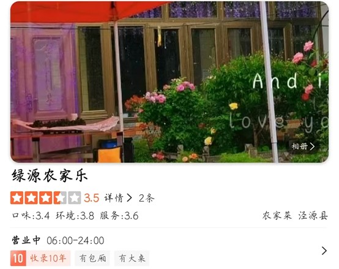
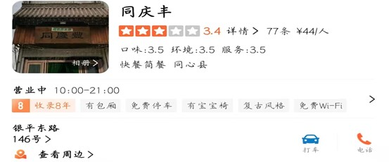
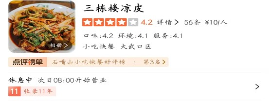

中卫星星酒店—星空餐厅 主营自助餐，大众点评4.5分，距离沙坡头景区6.7㎞ 服务体验较好
沙坡头特色餐饮
童家山庄柴火鸡，主营特色农家菜，距离景区1.4㎞，交通方便。 大众点评评分4.4分
百顺王农家乐餐饮部 距离沙坡头景区1.8㎞，交通方便，好评率高，大众评分4.6 主营农家菜，推荐菜：乡巴佬烧黄河鲤鱼
沙坡头主要交通
西夏王陵特色餐饮
山上人家山庄 主营特色西北民间菜，适合体验特色菜，距离6.6㎞，交通方便， 大众点评评分3.8分
马记餐厅 主营快餐、简餐，小吃多样，距离14.4㎞。 大众点评4.1分
沙坡头主要交通
西夏王陵位于宁夏银川市西夏区贺兰山东麓，以下是前往该景区的主要交通方式：
镇北堡西部影视城特色餐饮
北颂冰煮羊 主营牛羊肉火锅，属于西北特色火锅，在景区内，交通方便 评分4.5，服务好，人均百元
穆府鲜羊馆 主营农家菜，特色菜：铁锅羊肉，碗蒸羊羔肉。距离景区830m。 大众点评4.4分
金西部汉餐大盘羊肉炒烩肉 主营西北民间菜：牛肉炒烩、农家大盘鸡 距离景区760m。交通方便 大众点评4.1分
沙坡头主要交通
镇北堡西部影视城位于宁夏回族自治区银川市西夏区镇北堡镇，以下是前往该景区的主要交通方式：
沙湖特色餐饮
沙湖晓兰渔家汉餐 主营川菜，特色菜：沙湖鱼头 距离景区3.9㎞，交通方便 大众点评4.9分
沙湖塞上人家川味汉餐 主营川菜，特色菜：剁椒鱼头 距离景区3.9㎞ 大众点评4.8分
沙湖水鲜大鱼头餐厅 主营私房菜，特色菜：大鱼头，好评率高 距离景区3.9km 大众点评4.1分
沙坡头主要交通
沙湖附近的主要交通方式如下：
六盘山国家森林公园
万香农家乐40号 主营特色农家菜：泾源蒸鸡 距离景区8.7㎞，在泾源县 大众点评3.6分

绿源农家乐 主营农家菜 距离景区8.5km 大众点评3.5分
以下是六盘山国家森林公园附近的主要交通方式整理：
中卫腾格里沙漠
腾格里金沙海沙漠主题火车旅馆餐厅 主营家常菜 特色推荐：沙漠晚餐、焖鸡、沙葱炒鸡蛋 距离景区3.9km 大众点评4.1分
主要交通
吴忠同心清真寺
真渝味黑椒意大利面 主营快餐简餐 推荐：黑椒肉酱意面、宫廷香酥牛肉饼 距离景区1.9km 大众点评3.7分

同庆丰 主营快餐简餐 推荐美食：土豆烧牛肉煲仔饭、火烧子、红烧牛肉盒饭 距离景区1.9km 大众点评3.4分
生态渔头餐厅 主营特色美食 推荐：椒香带鱼、扒牛肉 距离景区1.0km 大众点评3.7分
主要交通
石嘴山星海湖
马学东羊羔肉烩肉总店 主营地方菜 特色推荐：羊羔肉、炒烩肉、扒肉条 距离景区960m 大众点评4.4分
聚鑫楼私房菜 主营私房菜 特色推荐：广式炒米粉、茶香红烧肉、藤椒鸭 距离景区1.3km 大众点评4.0分
兰花花餐厅 主营家常菜 特色砂锅羊肉、风味小面皮 距离景区1.6km 大众点评4.1分

三栋楼凉皮 主营小吃快餐 特色凉皮、米皮 距离景区520m 大众点评4.2分
主要交通